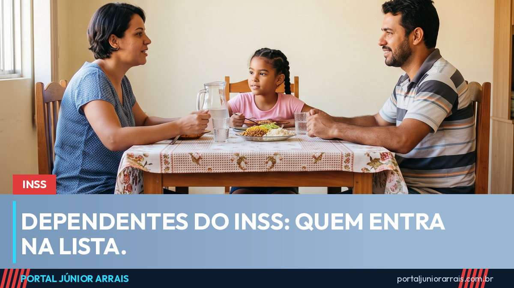

Dependentes do INSS: quem entra na lista e em que ordem

Muita discussão de família sobre pensão por morte começa e termina no mesmo ponto: quem, afinal, é considerado dependente pela Previdência. A resposta não é escolha de ninguém — está na Lei 8.213, de 1991, e funciona por classes.
As três classes
Primeira classe: o cônjuge, o companheiro ou a companheira, o filho não emancipado menor de 21 anos, e o filho de qualquer idade que tenha deficiência ou seja inválido.
Segunda classe: os pais.
Terceira classe: o irmão não emancipado menor de 21 anos, ou o irmão com deficiência ou inválido.
A regra que resolve a maioria das dúvidas
Aqui está o ponto que quase ninguém sabe: a existência de dependente de uma classe exclui as classes seguintes. Se o falecido deixou esposa e filho menor, os pais dele não entram — nem que dependessem financeiramente do filho. Só se não houver ninguém da primeira classe é que se passa para a segunda.
Havendo mais de um dependente na mesma classe, eles dividem o benefício em partes iguais.
Quem precisa provar dependência
Para os dependentes de primeira classe, a dependência econômica é presumida: não é preciso provar que se dependia do dinheiro do falecido, basta comprovar o vínculo. Já os pais e os irmãos precisam comprovar que dependiam economicamente.
União estável entra na primeira classe do mesmo jeito que o casamento, mas costuma dar mais trabalho: é preciso demonstrar a vida em comum, com documentos que mostrem endereço compartilhado, conta conjunta, filhos, plano de saúde, fotos e o que mais existir.
Cuidado com golpe
Momento de luto é quando a família está mais vulnerável, e há quem se aproveite disso oferecendo "liberar a pensão rápido" por um valor adiantado, ou pedindo documentos e senhas para "resolver tudo". Não existe fila paga, e nenhum órgão do governo cobra taxa nem pede Pix para conceder pensão.
Como cada família tem uma composição diferente, e a ordem das classes muda o resultado, vale procurar um profissional de sua confiança para analisar a situação antes de qualquer pedido.
Conteúdo informativo — não substitui orientação individualizada sobre o seu caso.
Veja também no canal
Júnior Arrais · Editor do Portal Júnior Arrais
Comunicador de Ubá (MG). Escreve todos os dias sobre benefícios sociais, INSS, trabalho e economia do dia a dia, a partir do Diário Oficial, de portarias e de fontes oficiais, em linguagem simples. Conheça a linha editorial e a política de correções do portal.